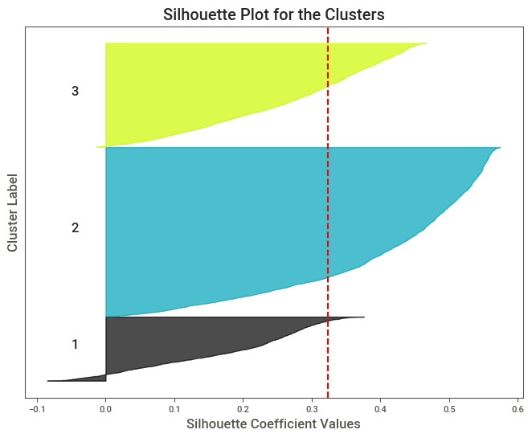

import numpy as npimport pandas as pdimport matplotlib.pyplot as pltimport seaborn as snsfrom sklearn.cluster import KMeans, OPTICSfrom sklearn.preprocessing import StandardScalerfrom pyclustertend import hopkinsfrom sklearn.metrics import silhouette_score, calinski_harabasz_score, davies_bouldin_score, silhouette_samplesfrom scipy.spatial.distance import pdist, squareformfrom mpl_toolkits.mplot3d import Axes3Dfrom yellowbrick.cluster import SilhouetteVisualizerimport umapfrom sklearn.neighbors import NearestNeighborsimport matplotlib.cm as cmfrom sklearn.cluster import DBSCAN
C:\Users\Memre\miniconda3\Lib\site-packages\umap\distances.py:1063: NumbaDeprecationWarning: The 'nopython' keyword argument was not supplied to the 'numba.jit' decorator. The implicit default value for this argument is currently False, but it will be changed to True in Numba 0.59.0. See https://numba.readthedocs.io/en/stable/reference/deprecation.html#deprecation-of-object-mode-fall-back-behaviour-when-using-jit for details.
@numba.jit()
C:\Users\Memre\miniconda3\Lib\site-packages\umap\distances.py:1071: NumbaDeprecationWarning: The 'nopython' keyword argument was not supplied to the 'numba.jit' decorator. The implicit default value for this argument is currently False, but it will be changed to True in Numba 0.59.0. See https://numba.readthedocs.io/en/stable/reference/deprecation.html#deprecation-of-object-mode-fall-back-behaviour-when-using-jit for details.
@numba.jit()
C:\Users\Memre\miniconda3\Lib\site-packages\umap\distances.py:1086: NumbaDeprecationWarning: The 'nopython' keyword argument was not supplied to the 'numba.jit' decorator. The implicit default value for this argument is currently False, but it will be changed to True in Numba 0.59.0. See https://numba.readthedocs.io/en/stable/reference/deprecation.html#deprecation-of-object-mode-fall-back-behaviour-when-using-jit for details.
@numba.jit()
C:\Users\Memre\miniconda3\Lib\site-packages\umap\umap_.py:660: NumbaDeprecationWarning: The 'nopython' keyword argument was not supplied to the 'numba.jit' decorator. The implicit default value for this argument is currently False, but it will be changed to True in Numba 0.59.0. See https://numba.readthedocs.io/en/stable/reference/deprecation.html#deprecation-of-object-mode-fall-back-behaviour-when-using-jit for details.
@numba.jit()
C:\Users\Memre\miniconda3\Lib\site-packages\sklearn\cluster\_kmeans.py:1412: FutureWarning: The default value of `n_init` will change from 10 to 'auto' in 1.4. Set the value of `n_init` explicitly to suppress the warning
super()._check_params_vs_input(X, default_n_init=10)
C:\Users\Memre\AppData\Local\Temp\ipykernel_760\2669742629.py:8: UserWarning: No data for colormapping provided via 'c'. Parameters 'cmap' will be ignored
plt.scatter(df_umap['UMAP 1'], df_umap['UMAP 2'], cmap='Spectral', s=5)

k_values =range(1, 11) wcss = []silhouette_scores = []for k in k_values: kmeans = KMeans(n_clusters=k, init='k-means++', max_iter=300, n_init=10, random_state=0) kmeans.fit(df_umap) wcss.append(kmeans.inertia_)if k >1: silhouette_scores.append(silhouette_score(df_umap, kmeans.labels_))else: silhouette_scores.append(0) fig, ax1 = plt.subplots(figsize=(12, 7))ax1.set_xlabel('Küme Sayısı (k)')ax1.set_ylabel('WCSS', color='tab:blue')ax1.plot(k_values, wcss, 'o-', color='tab:blue')ax1.tick_params(axis='y', labelcolor='tab:blue')ax2 = ax1.twinx() ax2.set_ylabel('Silhouette Skoru', color='tab:orange')ax2.plot(k_values, silhouette_scores, 'o-', color='tab:orange')ax2.tick_params(axis='y', labelcolor='tab:orange')fig.tight_layout()plt.title('Dirsek Yöntemi ve Silhouette Skoru')plt.show()
from IPython.display import display, Markdowndef display_results(results):for method, data in results.items(): display(Markdown(f"### {method}"))for dataset, metrics in data.items(): display(Markdown(f"#### {dataset}"))for metric, value in metrics.items(): display(Markdown(f"- **{metric}**: {value:.2f}"))display_results(results)